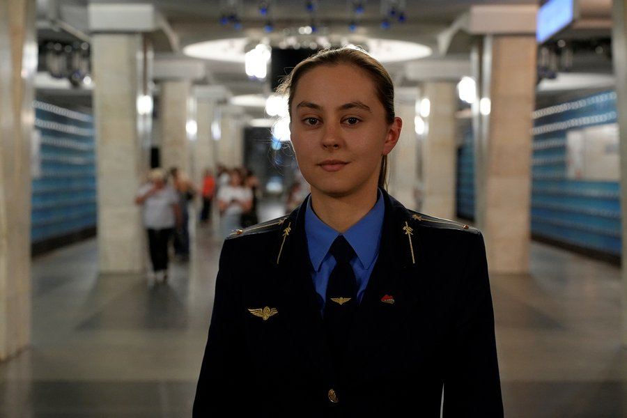
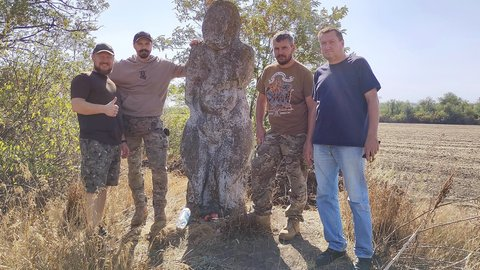
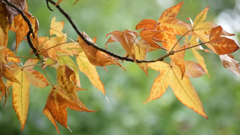
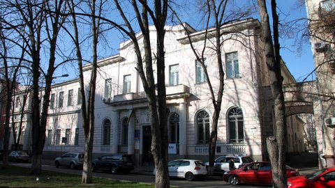

Останні новини
Нацвідбір на "Дитяче Євробачення 2024": коли та де дивитися фінал
Дата публікації: 22 вересня, 11:32
Музична продюсерка Нацвідбору Світлана Тарабарова та сонграйтер Євген Тріплов створили для кожного учасника й учасниці унікальний хіт, з яким ті виступатимуть у фіналі відбору. Перший етап голосування вже триває: опитування відкрилося в застосунку "Дія". Там голосування триватиме з 10:00 20 вересня до 10:00 22 вересня.
Взяти участь в опитуванні можуть всі охочі віком від 14 років. Для цього потрібно зайти в застосунок "Дія", в розділі "Сервіси" обрати "Опитування".
Читати повністю

Як працює перша жінка-машиністка у метро Харкова
Дата публікації: 20 вересня, 10:48
У харківському метро вперше за всю історію підземки почала працювати жінка на посаді машиністки електропоїзда — Анастасія Мазуркова. До 2024 року на цю посаду жінок не брали. Анастасії Мазурковій 25 років. Вона має технічну освіту, закінчила НТУ “ХПІ”. Після навчання пішла працювати у метро.
Читати повністю

"Таку "бабу" руками не повантажиш". Волонтери передали у Дніпро кам'яну бабу з Донеччини: у чому її цінність
Дата публікації: 20 вересня, 17:38
Кам'яну статую привезли на тимчасове збереження з Донеччини у Дніпро волонтери. Це вже десята "баба", що врятувала волонтерська команда, з прифронтової території. Раніше дві вивезли українські бійці, одну з них передали військові 3-ї ОШБр. Всього евакуювали з Донецької області 12 скульптур. Разом з "бабою" вивезли інші кам'яні артефакти.
Читати повністю

Народні прикмети про осінь: як українці прогнозували погоду на зиму і врожай
Дата публікації: 20 вересня, 16:57
Люди потребували розуміння того, що перебуває за межами їхнього досвіду та інших раціональних способів пояснення. Так з'явилися забобони та народні прикмети. Перші релігії, а саме фетишизм, тотемізм і анімізм, виникали в епоху пізнього палеоліту приблизно 40 тисяч років тому. Як писав український антрополог XX століття Хведір Вовк, залишків фетишизму в українських віруваннях майже не залишалося, однак анімізм, тобто віра в духовні істоти та наявність "вищого розуму", душі в природи, була основою розуміння природних явищ. Крім того, природу наділяли людськими рисами, адже те, що схоже на тебе, краще придається до розуміння. Вовк стверджує, що майже всі вірування, пов'язані з розумінням сил природи, є настільки давніми, що належать переважно до індоєвропейських.
Читати повністю

Україна спільно з Польщею займатиметься пошуком, ексгумацією та охороною місць пам'яті, але після воєнного стану
Дата публікації: 19 вересня, 12:39
Український інститут національної пам'яті почне працювати у групі польсько-українських фахівців, що займатимуться пошуками, ексгумаціями, легалізацією та охороною місць пам'яті за 3 місяці після завершення воєнного стану, її очолять заступники Мінкультів обох країн. Про це розповів УІНП у коментарі для Суспільне Культура.
Читати повністю